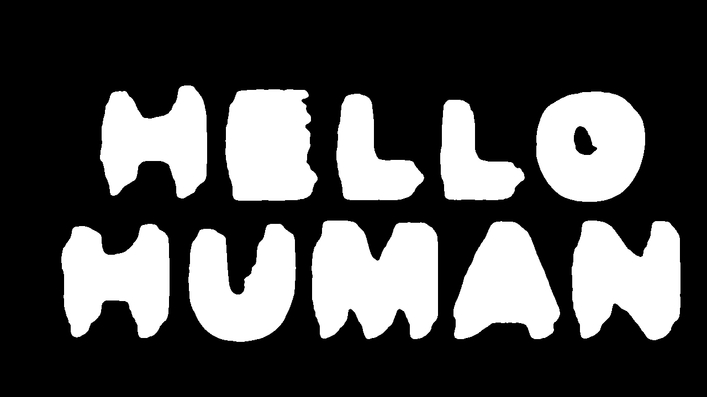
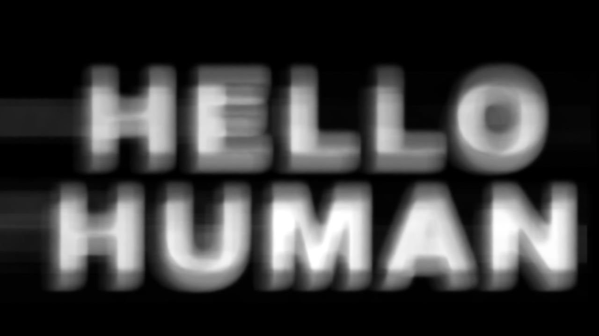

01 · Signal model
Why a still frame contains nothing to read.
A ghost-font clip is a motion-defined random-dot stimulus. Foreground dots inside the letter shapes and background dots can share the same brightness, density, size, and spatial distribution. The only separating feature is their velocity across time.
Equal spatial statistics
In a single image, glyph and background samples are drawn from the same visual texture. Thresholding, edge detection, template matching, and raw-frame OCR have no stable boundary to follow.
Different temporal vectors
Between frames, background dots follow a dominant translation while dots inside the glyph region move against it. Optical flow turns that temporal difference into a per-pixel vector field.
Weak per pair, strong in aggregate
A single flow estimate is noisy. The same glyph-shaped counter-motion recurs over many frame pairs, while random estimation error is incoherent and averages down during accumulation.
The letter region also drifts
Even after background subtraction, the entire glyph region can move across the clip. Each score map must be aligned before summation or the recovered letters smear into broad blobs.
Fₜ(x) = optical flow at pixel x
bₜ = medianₓ Fₜ(x)
rₜ(x) = Fₜ(x) − bₜ
sₜ(x) = max(0, rₜ(x) · (−bₜ / ‖bₜ‖))
The median flow estimates the dominant background because the background covers most of the frame. Positive projection onto the anti-background direction becomes counter-motion evidence. When the background magnitude is below 0.15 pixels, the decoder falls back to residual magnitude instead of dividing by an unstable direction.
02 · Decoder pipeline
From video frames to readable glyphs.
The production decoder is deliberately classical: OpenCV and NumPy perform the recovery, while OCR is a final optional reader rather than the source of the signal.
Decode and sample frames
OpenCV reads the video sequentially and converts each selected frame from BGR to grayscale. --stride N keeps every Nth frame; --max-frames caps work on long clips.
Grayscale is sufficient because the encoded feature is motion, not color. At least two usable frames are required to form one flow pair.
Compute dense optical flow
The default DIS preset estimates a two-dimensional motion vector at every pixel between consecutive frames. DIS is fast and robust for dense random-dot textures.
Farnebäck is available as a fallback with pyramid scale 0.5, three levels, a 15-pixel window, three iterations, polynomial neighborhood 5, and sigma 1.2.
Estimate background motion
The per-frame-pair background vector is the median of every flow vector. Because glyph pixels occupy a minority of the image, the median is resistant to their opposing movement.
Subtracting this vector removes global translation and leaves residual motion: the information needed to distinguish glyph dots from the field.
Score counter-motion
Residual vectors are projected onto the direction opposite the background. Negative values are clipped to zero, so only movement opposing the field adds evidence to the candidate glyph mask.
This signed score is more selective than raw motion magnitude: ordinary background error does not score merely because it moves.
Track and cancel glyph drift
Each pair score is blurred with a 31×31 Gaussian kernel. The blur suppresses individual dot noise while preserving the slowly moving glyph region.
Phase correlation estimates translation between consecutive smoothed score maps. Updates are accepted only when response exceeds 0.05 and displacement is below 30 pixels. Accepted shifts accumulate into a drift vector.
Register and accumulate
The current score map is warped by the negative cumulative drift, aligning it with the first score map. Registered maps are then summed across the clip.
Coherent glyph evidence grows approximately with the number of pairs; uncorrelated noise grows much more slowly. This temporal integration is what makes hidden letter shapes visible.
Normalize and clean the mask
The accumulated score is scaled using its 99.5th percentile, clipped to 8-bit range, and blurred with a 5×5 Gaussian. Otsu thresholding builds the strong mask.
A 7×7 elliptical morphological close fills glyph gaps; an open removes isolated noise. Components smaller than one twenty-thousandth of the image are discarded.
Recover faint coherent glyphs
A secondary threshold at half the Otsu value looks for lower-energy components. Candidates must be compact, tall enough, large enough, mostly absent from the strong mask, and peak at least 75% of the Otsu level.
Width constraints reject scan lines and pan bands. This conservative pass can restore a faint character—such as the isolated “I” in the proof clip—without flooding the mask with background motion.
Run optional OCR and verify
Tesseract receives the inverted clean mask with page segmentation mode 6. A second uppercase-and-digit-whitelisted pass can replace a punctuation-heavy result.
The decoder also checks for the geometry of an isolated uppercase “I”. OCR is never treated as ground truth: the agent inspects both the mask and heatmap and states uncertainty for ambiguous characters.
03 · Implementation details
The thresholds are guards, not magic numbers.
Each constraint protects a specific failure boundary: unstable camera motion, low-energy characters, noisy dot-level flow, or OCR that invents punctuation.
| Value | Role | Why it exists |
|---|---|---|
| background magnitude > 0.15 | Use directional opposition score | A direction derived from near-zero motion is numerically unstable. |
| 31×31 Gaussian | Prepare maps for phase correlation | Suppresses dot-level motion while retaining the glyph-region envelope. |
| response > 0.05 | Accept phase-correlation shift | Rejects low-confidence registration estimates. |
| shift < 30 px | Accept plausible inter-pair drift | Large jumps usually represent a bad correlation peak. |
| 99.5th percentile | Normalize accumulated score | Prevents a few extreme pixels from compressing the useful heatmap range. |
| 7×7 close/open | Clean strong binary mask | Joins broken strokes and removes small texture remnants at glyph scale. |
| 0.5 × Otsu | Faint-component threshold | Searches below the global threshold without admitting the full noise floor. |
| component width ≤ 4 × height | Faint-glyph compactness check | Rejects wide horizontal bands caused by scanning or camera translation. |
Complexity
For N selected frames of width W and height H, the dominant cost is dense optical flow: approximately O(NWH) work and O(WH) live memory for the current frames, flow, score maps, and accumulator. The implementation streams frames; it does not hold the whole video in RAM.
Trust boundary
The algorithm runs locally in the environment executing the skill. No model weights are needed for recovery, and the video is not required to leave that environment. OCR can be disabled entirely with --no-ocr.
04 · Outputs
Two images answer two different questions.
The clean mask answers “what can be read confidently?” The heatmap answers “where does the motion evidence exist, including weaker characters?”

Clean binary mask
High-contrast output for direct inspection and OCR. Morphology and component filtering prioritize readable shapes over weak evidence.

Raw opposition heatmap
Normalized accumulated score before binary thresholding. It preserves faint glyph evidence that may sit below the global Otsu cutoff.
05 · CLI reference
Run the same decoder without an agent.
Python 3.8+, OpenCV, and NumPy are required. Tesseract and pytesseract are optional. The images are still generated when OCR is unavailable.
pip install -r requirements.txt python decode.py docs/assets/ghost-message.mp4
python decode.py docs/assets/ghost-message.mp4 \ -o docs/assets/ \ --method farneback \ --stride 2 \ --max-frames 200 \ --no-ocr
| Argument | Default | Behavior |
|---|---|---|
| video | required | Path to MP4, MOV, AVI, WebM, or any format readable by the installed OpenCV build. |
| -o, --out-dir | current directory | Destination for revealed.png and revealed_heatmap.png. |
| --method | dis | Selects DIS or Farnebäck dense optical flow. |
| --stride | 1 | Processes every Nth frame. Use 2 for high-frame-rate clips or faster diagnostics. |
| --max-frames | unlimited | Stops after a fixed number of selected frames. A few seconds is usually sufficient. |
| --no-ocr | false | Skips Tesseract while preserving both visual outputs. |
06 · Failure modes
What weak evidence means—and what to try next.
Uniformly dark heatmap
The clip may not contain coherent counter-motion, may have too few usable frames, or may use a different hiding mechanism. Confirm the video actually moves and process a longer interval.
Letters smear into bands
Drift registration likely failed or the clip contains non-translational camera motion. Try Farnebäck, reduce stride, or inspect whether rotation and scale changes violate the translation-only registration model.
Mask is weak or empty
Retry with --method farneback. For high-frame-rate clips, --stride 2 can increase displacement between sampled frames and improve the flow signal.
One character is missing
Inspect the heatmap before concluding the character is absent. The clean Otsu mask is intentionally conservative; the faint-component recovery may still reject a weak or unusually shaped glyph.
OCR disagrees with the image
Trust visual evidence over OCR. Tesseract sees only the final binary geometry and can confuse broken strokes. The agent workflow requires opening the mask and heatmap, verifying the text, and marking ambiguous characters.
Tesseract is unavailable
This is not a decoding failure. The computer-vision pipeline still writes both images. Read the clean mask directly or install Tesseract later; use --no-ocr to skip the check explicitly.
07 · Agent proof
The screenshots are executions, not mockups.
Claude Code, Claude.ai, and Codex each ran the decoder against motion-hidden text, inspected generated evidence, and reported the recovered message. Select an image to inspect it at full resolution.
08 · Security meaning
Obfuscation changes the sensor, not the information.
Ghost fonts can defeat tools that inspect only individual images, but they do not remove the signal. They move it from spatial appearance into temporal correspondence.
Technical verdict
If a human can recover the letters from motion, a system that measures motion can recover them too.
Dense optical flow and phase correlation are established computer-vision methods. The decoder does not need a language model to infer the hidden phrase, and it does not break encryption because no encryption exists. It reconstructs a deliberately preserved visual signal from the dimension in which that signal was encoded.